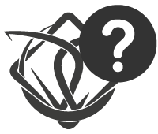
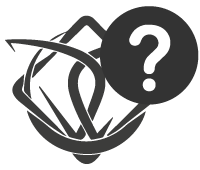

힘내맵으로 예랑가랑 성지순례!
힘내맵은 예랑가랑이
방문했던 장소/컨텐츠를 보여줘요
* 장소제보 및 기타문의는 오른쪽하단의 방명록 이용해주세요
장소정보와 컨텐츠를 볼 수 있어요
장소이름 클릭 시 정보(영업시간 등)를,
컨텐츠 클릭 시 예랑가랑의 모습을 볼 수 있어요
지역 별 방문장소 필터링!
힘내맨이 수호한 부산에서
타지까지~ 한 번 둘러볼까요?
아가씨,도련님만의 방명록!
방문후기 및 지도 표기요청 등
로그인 없이 다양한 이야기를 할 수 있어요!
* ‘비회원으로 작성하겠습니다’ 에 체크 후 댓글을 작성해주세요